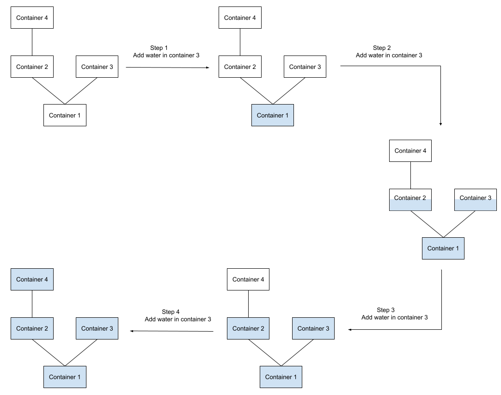

Because of the Communicating vessels principle, all containers in the same level are filled up equally, and containers of level $$$i$$$ will start filling up only when all containers of level $$$i-1$$$ are full. This principle is also evident from the example in the problem statement, which we repeat here. The first liter of water added flows down to container $$$1$$$ filling it up completely. Since the first level consisting of just the root container is now filled completely, the second liter of water starts filling both containers of the second level equally. The same effect would have been achieved if we were to add water to any container other than container $$$3$$$. The third liter of water fills up the second level completely, and only then the sole container in the third level is filled up with the fourth and final liter of water.

As we can see, it does not even matter, which containers are used for adding more water to the system. All we need to know is the final volume of water in the system, which is $$$\mathbf{Q}$$$ liters, and the number of containers $$$C_i$$$ in each level. Then the number of containers at level $$$i$$$ or below is $$$S_i=\sum_{j=1}^i C_j$$$, and the answer is the largest $$$S_i$$$ such that $$$S_i \le \mathbf{Q}$$$.
Since we are dealing with a perfect binary tree in this test set, $$$C_i=2^{i-1}$$$, and the solution boils down to the following simple loop. We just add powers of $$$2$$$ to the answer as long as it does not exceed the limit $$$\mathbf{Q}$$$.
int solve(int Q) {
int ans = 0;
int C = 1;
while (ans + C <= Q) {
ans += C;
C *= 2;
}
return ans;
}
The time complexity of this solution is proportional to the depth of the tree, which is $$$O(\log \mathbf{N})$$$.
Here we have an arbitrary rooted tree, so we must make the extra effort to count the number of containers $$$C_i$$$ in each level using any tree traversal algorithm, for example, Depth-first search. Otherwise, the logic remains the same.
int solve(int Q, vector<int> C) {
int ans = 0;
int level = 1;
while (level < C.size() && ans + C[level] <= Q) {
ans += C[level];
level++;
}
return ans;
}
The time complexity of this solution is $$$O(\mathbf{N})$$$ because of the Depth-first search.